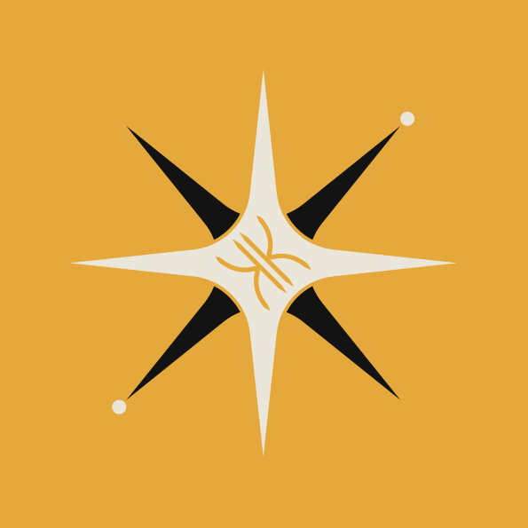

Ven a jugar.
Descubre otras formas de compartir una partida. Explora mundos, conoce personas y encuentra una comunidad a la que quieras volver.
CURIOSIDAD
kintareKintare es una comunidad para crear experiencias y conexiones. Construimos una plataforma de juego para que lo que imaginas tenga un lugar, y alguien con quien compartirlo.
Conoce KintarePara quienes juegan.
Para quienes crean.
Para quienes se quedan.
El mundo que construyeron. La partida que se alargó. Esa persona que llegó por un juego y terminó siendo parte de tu vida.
Kintare nace de esa forma de entender el juego. Queremos dar a jugadores, creadores y comunidades una base común para encontrarse, expresarse y hacer cosas juntos.
Desde Puebla, México, desarrollamos la tecnología que sostiene esas experiencias: cuentas, perfiles, mundos compartidos y herramientas para las personas que los cuidan.
Una base compartida para jugar, crear y organizar una comunidad. Explora lo que estamos construyendo.
Tu cuenta es el punto de partida. Identidad de jugador, perfiles y personalización, con herramientas para controlar cómo accedes a Kintare.
Desarrollamos servicios para organizar servidores y mundos de juego: espacios que una comunidad puede hacer suyos y seguir construyendo con el tiempo.
Una comunidad necesita algo más que un servidor. Estamos construyendo herramientas para conectar sus espacios y dar a quienes los administran formas de organizarlos y cuidarlos.
Kintare está en desarrollo activo. Esta es nuestra dirección y nuestra base de trabajo; la disponibilidad de cada función se comunicará conforme avance la plataforma.
Las buenas comunidades se construyen con personas que aportan cosas distintas. Aquí hay espacio para las tuyas.
Descubre otras formas de compartir una partida. Explora mundos, conoce personas y encuentra una comunidad a la que quieras volver.
CURIOSIDADUn mundo, un mod, un personaje o una experiencia que todavía no existe. Queremos construir un lugar donde esas ideas puedan encontrarse con otras personas.
CREATIVIDADSi reúnes personas alrededor de un juego, conoces el trabajo que hay detrás. La plataforma crece pensando también en quienes organizan y cuidan esos espacios.
CONEXIÓNUna comunidad y una plataforma de juego en desarrollo. Estamos creando la base técnica para conectar identidad de jugadores, servicios de juego y espacios compartidos, con la creación de experiencias y las conexiones entre personas como propósito.
Kintare es el espacio y la tecnología que conecta experiencias y comunidades. Nuestro trabajo actual incluye servicios para Minecraft e integraciones con Hytale, con distintos niveles de desarrollo y validación.
Estamos en desarrollo activo. Si quieres conocer el estado del proyecto, aportar una idea o explorar una colaboración, contacta a erin_max_ en Discord. Compartiremos el acceso a las funciones conforme estén listas.
En Puebla, México, en 2024. Construimos desde aquí con la idea de que una experiencia compartida puede conectar personas de cualquier lugar.
Kintare es un proyecto independiente. Minecraft y Hytale pertenecen a sus respectivos titulares; mencionamos estos juegos para explicar el trabajo de integración de la plataforma, sin implicar afiliación ni respaldo oficial.
¿Tienes una idea, una comunidad o ganas de saber más de Kintare? Nos gustaría escucharte.
Añade este usuario como amigo para iniciar una conversación.